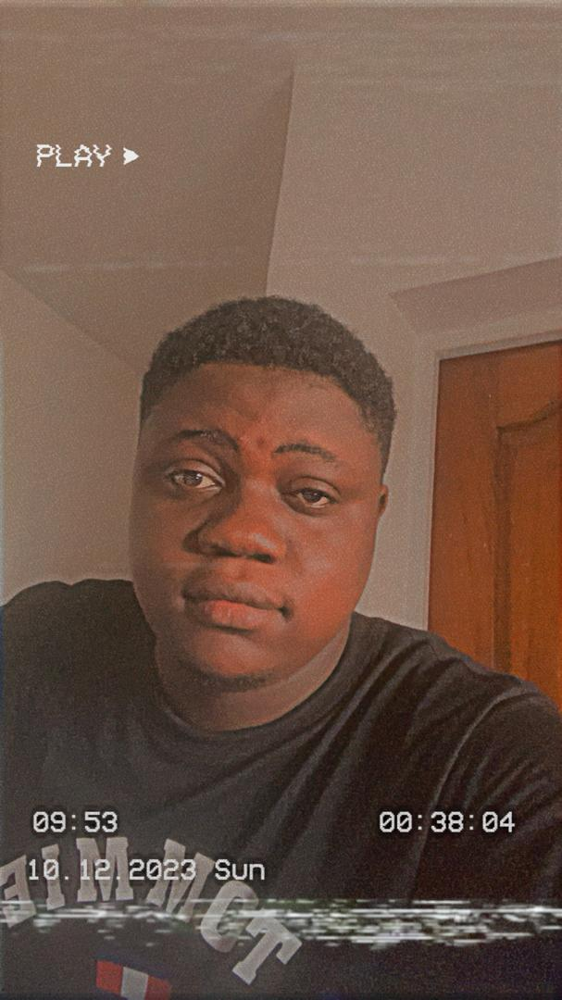
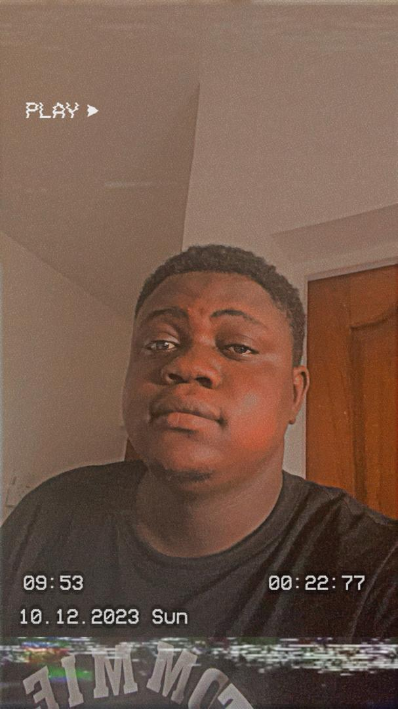
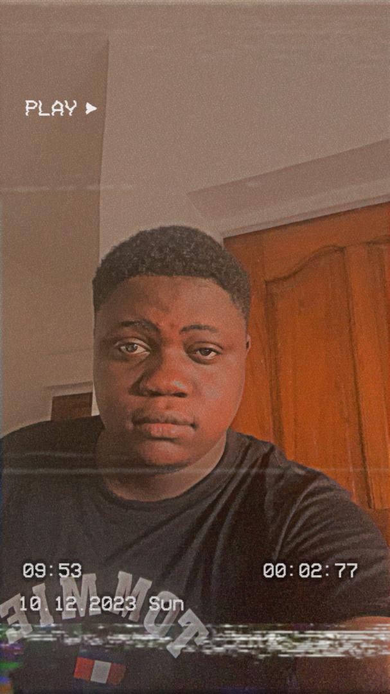
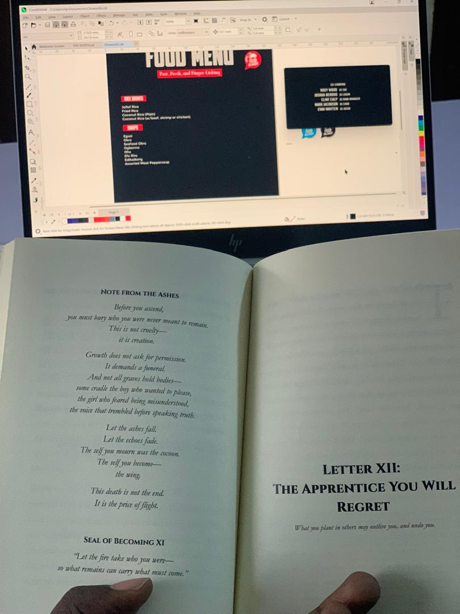

Benedict Adurosakin
Someone who's always been deeply curious about people, healing, and meaning. That curiosity naturally led me into the world of nursing, research, and creative writing, where I get to bring clarity and structure to complex experiences. Whether I’m treating patients, building health content, or writing allegorical novels, I focus on creating human-centred impact that lasts.